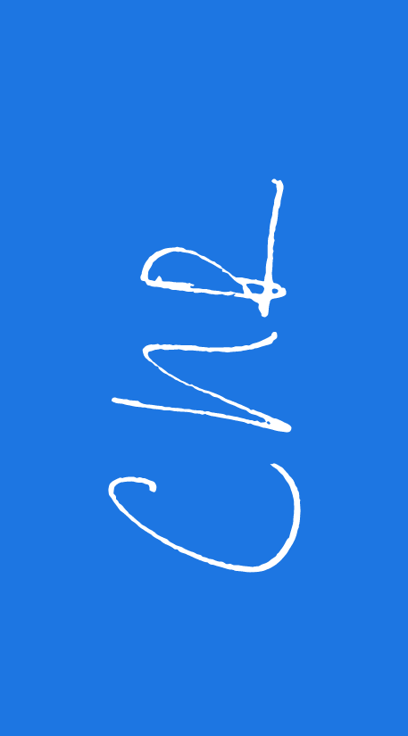

I recently finished a job search. Starting May 5, I’ll be a Data Analyst for Kin + Carta’s Cascade Data Labs! It was so exciting to get this offer because it validated my beliefs in my self-taught skills and the direction that I decided to head in. It’ll continue to excite by sautéeing me in new tools and give me the time to marinate in data science more generally.1
So, it’s a bit weird that I’m now investing time in creating personal branding. I had intended that this time would give me a leg up on other applicants, but now I realize that it let’s me scratch an itch I forgot I had. Plus, with the new job, I feel that I can be a bit more adventurous in design—the acute pain of rejection had whittled my design instincts into conservativity.
I started (as I seem to always do now) by writing a procurement contract for myself. The personal branding must:
- be distinctive (if not unique)
- unify, at the very least, a résumé, a cover letter, and a business card
- use open-source tech
- play nice with the automated realities of networking/applying today
- demonstrate and develop my skills
- leave open the possibility of adding other document types
- ease portability between PDFs, this website, LinkedIn, and GitHub
Unfortunately, I didn’t look too closely at the possibility of this last requirement; LinkedIn doesn’t seem to allow people to edit their own info via API. This fact is particularly disappointing since Microsoft owns LinkedIn and has stated it’s open-source intentions. But, que sera sera. To fulfill the rest of my requirements, I turned to TeX. I currently use TeX for all my résumés and cover letters, but I decided my new template could afford to be more daring than Trey Hunner’s classic template. And, it would have to be more distinctive than Deb Das’ ubiquitous CV.
But, only a little bit. The new template is just two steps removed from Das’ CV, the first being Shubham Mazmuder’s PlushCV, and the second being some lines injected from Andy Bernard’s non-repoducible example.2 An important, practical change was the substitution of ligatures and other glyphs for unicode symbols. Applicant-tracking systems struggle with LaTeX documents because of these features, though it pains me to remove them. I’m also keeping the same fonts throughout, a habit from my own yearbook days that is compatible with the minimalist, quiver-of-one idealism that I’m bringing to this whole endeavor. Naturally, the fonts must be open-source, so I’m using Adobe’s Source Sans Pro and Source Code Pro.3


Source typeforms
Developing the résumé was easy enough, given how little I changed things:

The cover letter was easy too; just remove the sections, add a signature, and, voilá!

The business card? A little more involved. I found a fantastic introduction to business cards in LaTeX, with a great little bit about designing a QR code linked to my own vCard (something that can be scanned easily if you keep such things in a transparent phone case)s. Initials add a bit of class to the whole affair, and doesn’t carry a lot of consequences given how seldom they are used.

Last, to make these even easier to edit, I created global options used across the media. This allows users to change fonts, colors, and contact information without doing so for each document.
Footnotes
You’ll notice that I’ve mentioned the names here, and that’s because they’re stuck in my head! When you make a résumé template, you enjoy the benefit of other’s learning all about you.↩︎
You may have noticed I’ve changed this blog’s typeface from IBM Plex to Source; I’ve learned from this process that IBM Plex is a bit too IBM-er for me.↩︎